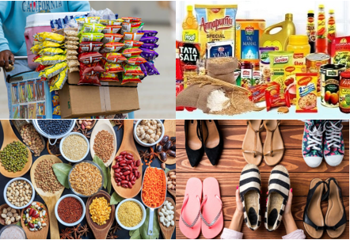

Our Products

Fresh Fruits
High-quality seasonal fruits.

Vegetables
Fresh and organic vegetables.

More
Explore Products-list
High-quality seasonal fruits.
Fresh and organic vegetables.
Explore Products-list
Established over 70 years ago in the heart of Srirengapuram, V.Sundararajan Store has been a trusted name in the community for generations. Founded by the visionary V.Sundararajan, the Store began with a mission to provide quality groceries and essential items to the local community.
Today, the legacy of excellence continues as the V.Sundararajan family proudly manages the stores, ensuring that the values of trust, quality, and customer satisfaction remain at the forefront. Known for its wide range of groceries and other essential items, the store has become a one-stop for households in the region.
At V.Sundararajan Store, tradition meets modernity, as the family strives to maintains the same high standards set by its founder while embracing new trends and customer needs. Wheather you're looking for fresh ingredients, pantry staples, or household necessities, the stores remains committed to serving you in the best possible way.
Address: V.C.Puram Main Road, Srirengapuram, Thadicheri, Theni-625534, Tamil Nadu, India Phone: 9843440808